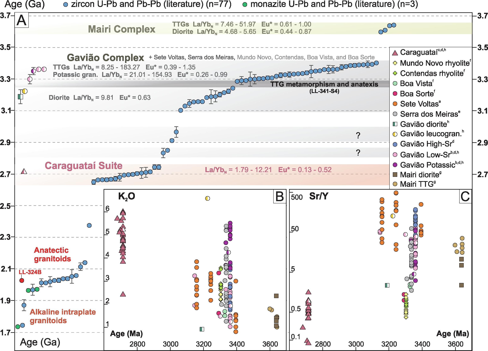

Crustal reworking and Archean TTG generation in the South Gavião Block, São Francisco Craton, Brazil

Resumo em Português
A origem da crosta félsica da Terra primitiva é tema de debate crescente, no qual o registro rochoso de crátons antigos desempenha papel fundamental. No Nordeste do Brasil, o Cráton São Francisco preserva as rochas félsicas mais antigas da América do Sul, e a compreensão de sua evolução Arqueana é uma peça importante nesse debate. São apresentadas novas idades U-Pb em zircão (SHRIMP) e geoquímica de rocha total, bem como um extenso conjunto de dados compilados para discutir a evolução do sul do Bloco Gavião (BG), um componente maior deste cráton. O BG contém TTGs Paleo- a Mesoarqueanos (3,36–3,18 Ga), granitos de alto-K e dioritos subordinados do Complexo Gavião, seguidos de magmatismo renovado, retrabalhamento e anatexia entre 3,27 e 3,22 Ga. As rochas TTG do Complexo Gavião podem ser divididas em alto-Sr (alta pressão) e baixo-Sr (baixa a média pressão), evidenciando que o magmatismo sódico provavelmente ocorreu em diferentes profundidades de forma diacrônica entre 3,36 e 3,20 Ga. É reportada uma idade de cristalização de ~3,35 Ga para um meta-granito calc-alcalino de alto-K incomum no Arqueano, que marca o primeiro magmatismo potássico do Complexo Gavião, sugerindo retrabalhamento de TTGs preexistentes. Idades U-Pb em zircão de um migmatito TTG delimitaram uma idade de ~3,27 Ga, interpretada como um evento metamórfico no embasamento do BG, recuando em ~120 Ma a idade metamórfica mais antiga conhecida para todo o Cráton São Francisco. Adicionalmente, em ~2,7 Ga, o BG foi intrudido pelo magmatismo intraplaca alcalino da Suíte Caraguataí, marcando a estabilidade desse bloco durante o Neoarqueano. O retrabalhamento crustal é proposto como o principal mecanismo responsável pela formação do BG durante o Paleo- ao Mesoarqueano, com os dados sugerindo que as rochas do BG compartilham uma fonte antiga possivelmente incluindo componentes Hadeanos. Propõe-se que a formação dos TTGs do BG resulta da fusão de crosta máfica de baixo-K na base de um platô oceânico progressivamente mais espesso.